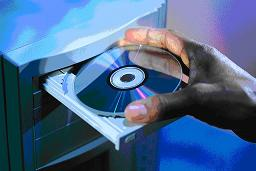

COMPUTER CARE
Taking care of your computer is just as important as taking care of your books. Both the internal and the external parts of the computer have to be cared for. Scanning, defragging and reformatting are some of the activities performed to clean up the hard drive. These activities are best left to a grown up and such you should not attempt them. However, there are certain tasks you can perform to ensure you computer is clean; here are a few:
Keep Dust Away
Dust your computer to keep it free of dust and dirt.Keep Food Away
Do not eat or drink while working on the computer.Use Clean Hands:
Make sure your hands are clean before you type on the keyboard of click the mouse.Treat With Respect
If you are having problems with your computer, ask for help. Do not bang or hit the computer.Keep Off
Seeing that the computer is connected to electricity, this means that lightning could be conducted to your computer through the electrical connection. For this reason it is best not to use your computer during a storm.Stop Virus Attack
A computer virus is a program written by a person on purpose to harm other peoples computers. A computer virus is passed from one computer o another when you share and download files without the protection of an antivirus software. For this reason you should get permission before downloading files.Handle With Care
The way you handle your CDs will determine how log they will last. Always hold the CD correctly as shown in the picture below.